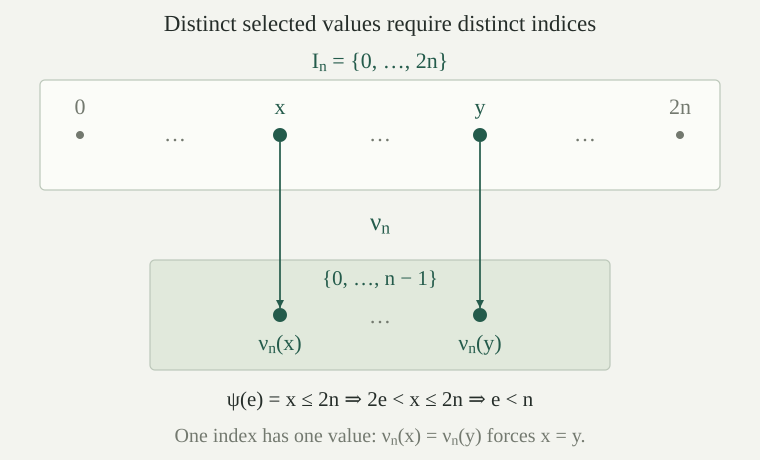

A set \(B\subseteq\mathbb N\) is immune if it is infinite and every computably enumerable subset of \(B\) is finite. Equivalently, using the fixed domain sets \(W_e=\{x:\varphi_e(x)\downarrow\}\),
The infinitude condition matters. A finite set also has no infinite subset, but it is not immune. Immunity says that an infinite collection of numbers has no infinite part that can be recognized by a program. It allows finite enumerable subsets, including every singleton of one of its members.
No immune set is computably enumerable, and no immune set is productive.
If an immune set \(B\) were c.e., the set \(B\) itself would be an infinite c.e. subset of \(B\), contradicting the definition.
If \(B\) were productive, the escape iteration would construct an infinite c.e. subset of \(B\), again contradicting immunity. Thus failure of enumerability by itself does not guarantee the effective escape property: an immune set fails to be enumerable, but it cannot support a productive function.
A set \(S\subseteq\mathbb N\) is simple if \(S\) is c.e. and its complement \(\overline S=\mathbb N\setminus S\) is immune. In particular, \(\overline S\) must be infinite. The adjective refers to this precise combination of enumerability and a restriction on the omitted numbers; it does not mean that membership is easy to decide.
It is useful to express the restriction without quantifying over subsets of the complement. An infinite enumerable set cannot be entirely omitted from a simple set. The next criterion makes that requirement exact.
For a c.e. set \(S\) with infinite complement, simplicity is equivalent to
If \(S\) is simple and an infinite \(W_e\) were disjoint from \(S\), then \(W_e\subseteq\overline S\) would be an infinite c.e. subset of an immune set. This is impossible.
Conversely, suppose the displayed condition holds. Let \(D\subseteq\overline S\) be c.e., and choose an index \(e\) with \(W_e=D\). If \(D\) were infinite, the condition would make \(D\cap S\) nonempty, contrary to the inclusion in the complement. Hence every such \(D\) is finite. Together with the assumed infinitude of \(\overline S\), this proves immunity and therefore simplicity.
Every simple set is undecidable. Both the set and its complement are infinite.
The complement is infinite by definition. If \(S\) were decidable, its complement would be decidable and hence c.e. But an immune set cannot be c.e., by . Thus \(S\) is undecidable.
Every finite set is decidable: compare an input with its finitely many listed members. Therefore \(S\) cannot be finite. This proves both infinitude assertions without giving a procedure to enumerate the omitted numbers.
Use the primitive-recursive successful-computation relation \(T(e,x,k)\), with \(x\in W_e\Longleftrightarrow\exists k\,T(e,x,k)\). For each index \(e\), search increasing pair codes \(w\) for the condition
Define the threshold selector \(\psi\) by
If no pair passes the test, the search runs forever and \(\psi(e)\) is undefined. If a pair passes, the procedure returns its first component. Each index can contribute only one selected number, because the partial function \(\psi\) has at most one value at any input.
The function \(\psi\) is partial recursive and satisfies
Whenever \(\psi(e)\downarrow=x\), the selected value satisfies \(2e<x\) and \(x\in W_e\).
Pair decoding, multiplication by two, and comparison are primitive recursive. Since \(T\) is primitive recursive jointly in its arguments, so is the test \(Q\). Unbounded minimization followed by pair projection therefore defines a partial recursive function.
If the search stops at \(w\), its successful test gives \(2e<\operatorname{left}(w)\) and a certificate for membership of that number in \(W_e\). Conversely, if \(x>2e\) belongs to \(W_e\), choose a certificate \(k\). The pair \(\langle x,k\rangle\) passes the test, so the increasing search for a passing code eventually stops. It may stop at an earlier passing pair, but that pair has the same required threshold and membership properties.
The procedure never asks whether \(W_e\) is infinite or whether a computation will fail forever. Such facts are used in the proof that some searches terminate, not tested by the selector.
Choose an index \(q\) of a total program, so \(W_q=\mathbb N\). Does \(\psi(q)\) choose the least member of this domain? What object does the minimization actually make least?
The set \(W_q\) has members above \(2q\), so \(\psi(q)\) is defined. Its value is positive because it is strictly greater than \(2q\). It therefore differs from the least member zero of \(W_q\).
The least object is the pair code \(w\) satisfying \(Q(q,w)\). This orders whole certificate codes. It does not first order candidate members \(x\) and wait to settle each candidate. The construction needs one eligible certified member and does not assert that its value is least among eligible members.
Put
The set \(A\) is c.e. Every member \(x\in A\) has a producing index \(e\) with \(2e<x\) and \(x\in W_e\). In particular, \(0\notin A\).
The partial-range characterization makes the range of the partial recursive function \(\psi\) c.e., including any undefined inputs. If \(x\in A\), choose \(e\) with \(\psi(e)\downarrow=x\) and apply . The inequality excludes zero.
Positive discoveries can be organized by the uniform finite-stage procedure. One must not wait for the search at index zero to finish before starting the search at index one: an individual search may diverge. Enumerating the range recognizes successful outputs while allowing those unsuccessful searches to continue.
For every \(n\in\mathbb N\), let \(I_n=\{0,\ldots,2n\}\). Then
Let \(x\in A\cap I_n\), and choose a producing index \(e\) with \(\psi(e)\downarrow=x\). The threshold gives \(2e<x\le2n\), so \(e<n\). Thus every selected number in this interval comes from one of the \(n\) indices \(0,\ldots,n-1\). An index \(e\ge n\) cannot contribute inside \(I_n\), regardless of when its search terminates.
For an explicit finite counting map, assign to each \(x\in A\cap I_n\) the least producing index below \(n\):
The preceding argument makes this a well-defined map into \(\{0,\ldots,n-1\}\). It is injective: if \(\nu_n(x)=\nu_n(y)=e\), the one partial value \(\psi(e)\) equals both \(x\) and \(y\), so \(x=y\). Hence \(\lvert A\cap I_n\rvert\le n\). Different indices are allowed to select the same number; such repetitions only reduce the size of the range. The map \(\nu_n\) is used for a mathematical counting argument, with no claim that it is a total computable function on arbitrary inputs.
At \(n=0\), the target of this injection is empty and \(I_0=\{0\}\). The conclusion agrees with \(0\notin A\). The strict inequality in the threshold is exactly what gives \(e<n\) for every contribution to \(I_n\).

For every \(n\in\mathbb N\),
Consequently \(\overline A\) is infinite.
The interval \(I_n\) has \(2n+1\) members and is the disjoint union of \(A\cap I_n\) and \(\overline A\cap I_n\). By , at most \(n\) of those members lie in \(A\). At least \(2n+1-n=n+1\) therefore lie in its complement.
If \(\overline A\) were finite with \(r\) members, apply this bound at \(n=r\). Its intersection with \(I_r\) would contain at least \(r+1\) members, although the whole complement has only \(r\). This contradiction proves infinitude. The estimate counts omissions without recognizing which numbers will remain omitted forever.
For every index \(e\), if \(W_e\) is infinite, then \(\psi(e)\) is defined and its value belongs to \(A\cap W_e\). In particular, every infinite \(W_e\) meets \(A\).
An infinite subset of \(\mathbb N\) cannot be contained in the finite interval \(\{0,\ldots,2e\}\). Therefore some \(x\in W_e\) satisfies \(x>2e\). The domain equivalence in shows that \(\psi(e)\) terminates.
Its selected value belongs to \(W_e\) by selector correctness, and it belongs to \(A\) by the definition of the range. This proves the requirement for the particular index \(e\), and the same argument applies to every infinite indexed set. Finite sets may or may not contribute; the proof does not need to distinguish them effectively.
For the specified partial selector \(\psi\), the set \(A=\operatorname{range}(\psi)\) is simple. It is c.e., its complement is infinite, and every infinite c.e. set meets \(A\). Thus \(\overline A\) is immune and \(A\) is undecidable.
The counting proof leaves many omissions in each finite interval. Could a simple set omit every even number, so that the even numbers give a known infinite collection of omissions?
No. The even numbers form an infinite decidable, hence c.e., set. If all were outside a simple set \(S\), they would be an infinite c.e. subset of the immune complement \(\overline S\). Equivalently, they would violate the requirement that every infinite enumerable set meet \(S\).
The same argument applies to any specified infinite c.e. set of proposed permanent omissions. The counting bound establishes that infinitely many omissions exist; it does not provide an infinite enumerable list consisting entirely of them.
No simple set is creative or many-one complete among the c.e. sets. In particular, the constructed set \(A\) is c.e. and undecidable, but \(K\not\le_m A\) for the diagonal halting set \(K\).
Let \(S\) be simple. Its complement is immune and hence not productive by . Therefore \(S\) is not creative. Since \(S\) is c.e., the creativity characterization of completeness implies that \(S\) is not many-one complete and that \(K\not\le_m S\).
Apply this conclusion to \(A\), which is simple by . Its construction supplies an undecidable enumerable problem that does not receive diagonal halting by a total computable transformation preserving both membership answers.
For the constructed simple set \(A\), determine which of \(A\le_m K\) and \(K\le_m A\) holds. What has been ruled out for a program trying to decide halting with the help of \(A\)?
The set \(A\) is c.e., so diagonal halting completeness gives \(A\le_m K\). The reverse reduction fails by .
What fails is one particular form of assistance: there is no total computable map \(f\) for which \(x\in K\Longleftrightarrow f(x)\in A\) on every input. This translates the input once and uses the membership answer without changing its sign. The argument has not ruled out procedures that ask several membership questions, choose later questions based on earlier answers, or otherwise use such answers in a computation. Consequently the proved many-one incompleteness is not a claim of Turing incompleteness and does not solve Post’s problem about that stronger form of reducibility.